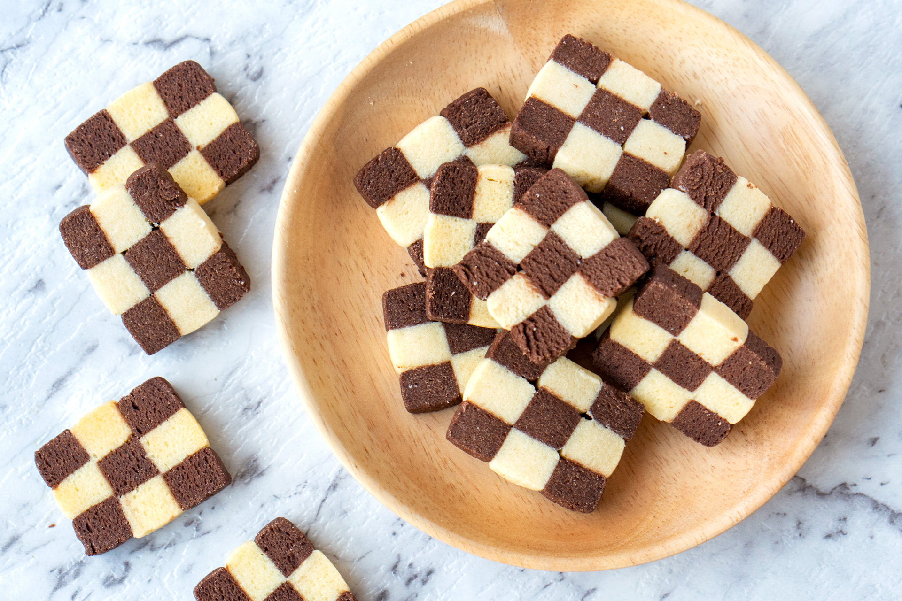
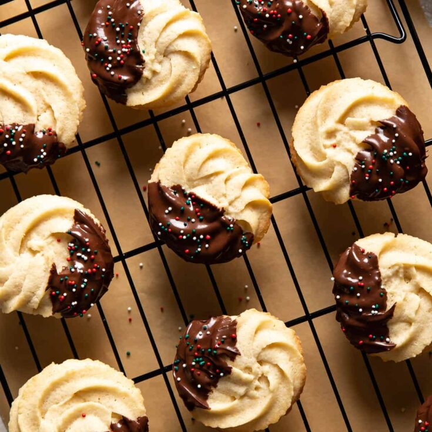

IDK Sweet Treat Recipes
Sections
Checkerboard Cookies
Description
These extra cute cookies are easy to make and you
get to enjoy a chocolate and vanilla cookie in one!
Author: Shelly
Prep Time: 20 minutes
Cook Time: 10 minutes
Total Time: 30 minutes
Yield: 24 cookies
Origin: Sweden

Ingredients
- 1 cup of butter, room temperature.
- 1 cup of granulated sugar.
- 1 egg, plus 1 egg yolk.
- 1 teaspoon of vanilla extract.
-
1 1/2 teaspoons of baking powder.
- 1/2 teaspoon of kosher salt.
- 3 cups of all purpose flour.
- 1/3 cup of unsweetened cocoa powder.
Instructions
-
In the bowl of your stand mixer fitted with
the paddle attachment
mix together the butter and sugar for 2 minutes.
-
Add in the egg, the yolk, vanilla, baking powder,
and salt and mix for 1 minute until smooth, scraping
the sides of the bowl as necessary.
-
Turn the mixer to low and add in the
flour, mixing until just combined.
-
Divide the dough in half, removing half from
the mixing bowl.
-
Add in the cocoa powder to the remaining dough
in the mixing bowl and mix until incorporated.
- Form each dough into a squared off log, 2- inches
tall and 6- inches long. Make sure both are the same size.
-
Place dough on a baking sheet and cover with
cling wrap. Place dough into the refrigerator to
chill for at least 1 hour.
-
Using a sharp knife slice the dough into thirds,
longwise. Then turn the dough one turn and cut
into thirds again. You will have 9 strips. Repeat
the process with the other dough. You will have
18 strips total.
-
Lay 1 piece of vanilla dough, one piece of chocolate,
and another piece of vanilla on a flat surface next
to each other. Top the 3 strips with alternating
colors. Repeat this once more, so you have a
square log. Press the dough strips together tightly,
keeping the square shape. Repeat this with
the remaining dough.
- Refrigerate again for at least 30 minutes.
-
Preheat the oven to 350°F. Line a baking sheet
with Reynolds Kitchens® Parchment Paper.
-
Remove the dough from the refrigerator and
slice into 1/4- inch pieces.
- Place the pieces on the prepared baking sheet.
-
Bake for 9-10 minutes, or until set. Transfer
to a wire rack to cool completely.
Recipe Notes
Store airtight for up to 5 days.
Freeze airtight for up to 30 days.
Nutrition
- Serving Size: 1 cookie
- Calories: 167
- Sugar: 8.4 g
- Sodium: 56.6 mg
- Fat: 8.4 g
- Carbohydrates: 21.3 g
- Protein: 2.4 g
- Cholesterol: 35.8 mg
Keywords: cookies and cups, checkerboard cookies,
cookie recipe, cookies, christmas cookies, butter cookies,
vanilla cookies, chocolate cookies, and easy christmas
cookies recipe.
View Original Here
Butter Cookies
Description
Butter Cookies are a classic favorite holiday cookie
but they're also great all year around! Crisp, buttery
cookies with melt-in-your-mouth interiors, these are super
simple with just 6 ingredients and no chilling required!
I STRONGLY RECOMMEND A LARGE ATECO 827 TIP TO PIPE THIS DOUGH,
ANY SMALLER AND YOU MAY NOT BE ABLE TO PIPE THE DOUGH.
Course: Cookies/dessert
Origin: Denmark
Prep Time: 25 minutes
Cook Time: 10 minutes
Servings: 26 cookies
Calories: 146kcal
Author: Sam Merritt

Ingredients
-
1 cup(226g) of unsalted butter
softened.
- 3/4 cup(150g) of granulated sugar.
- 1 large egg yolk.
- 2 teaspoons of vanilla extract.
- 1/4 teaspoons of salt.
- 2 cups + 2 Tablespoons of all purpose flour.
For Chocolate(optional)
- 1 cup(170g) of dark chocolate chips.
- 1/2 teaspoon of vegetable oil.
Recommended Equipment
- Piping bag
- Ateco 827 piping tip
Instructions
- Preheat oven 375F (190C).
-
In a large bowl (or, preferably, in the bowl
of a stand mixer), combine butter and sugar and beat
together with an electric mixer until creamy and
very well-combined. 1 cup (226 g) unsalted butter,
¾ cup (150 g) granulated sugar.
-
Add egg yolk, vanilla extract, and salt and beat well.
Pause to scrape the sides and bottom of the bowl to ensure
that all ingredients are well incorporated. 1 large
egg yolk,2 teaspoons vanilla extract,¼ teaspoon salt.
-
With mixer on low speed, gradually add flour until the
flour is completely combined. Again you should pause to
scrape the sides and bottom of the bowl. 2 cups + 2
Tablespoons all-purpose flour¹.
-
Fit a large piping bag with Ateco 827 piping tip
and portion half of the cookie dough into the bag².
-
Pipe cookies into swirl shapes on an unlined,
ungreased cookie sheet. Transfer to 375F (190C)
preheated oven and bake for 10-12 minutes or until
edges of cookies are just beginning to turn golden brown.
-
Allow cookies to cool for 10 minutes on cookie sheet
before transferring to cooling rack to cool completely.
-
Do not pipe cookie dough onto a hot or warm cookie sheet.
-
Once cookies have cooled completely, dip in
chocolate (if desired).
Chocolate (optional)
-
Combine chocolate chips and shortening in a small bowl.
Heat in the microwave in 20 second increments,
stirring well in between, until chocolate is completely
melted and smooth. 1 cup (170 g) dark chocolate
chips,½ teaspoon vegetable oil.
-
Dip cookies in chocolate and transfer to a wax paper
lined cookie sheet. Decorate with nonpareils or other
sprinkles, if desired. Nonpareil sprinkles.
-
Allow chocolate to harden before enjoying. You can
speed up this process by placing the cookies in the
refrigerator for about 15 minutes.
Recipe Notes
A few people have commented that their dough was too
stiff to pipe. While the dough is a bit stiff (this is
important for the cookies to hold their shape) it should not
be too stiff to pipe. You will need to use an Ateco 827 tip
for best results (I've found that most people having trouble
have been using smaller tips), anything smaller or more closed
will likely be too difficult to pipe.
Another possible reason for too-stiff dough is that the flour
was accidentally over-measured. Please see my post about
how to measure flour properly
(you should lightly spoon the flour into a measuring cup
and then level it off, never scoop the flour directly
into the measuring cup).
I recommend portioning just half the batter at a time because
it is easier to pipe the cookie dough if there is less in the bag.
Help! I don't have the right piping tip OR My dough ended up
too stiff to pipe!
Don't have an Ateco 827? Don't kill your hand trying to
use a smaller tip! You can instead drop the cookie dough by
rounded 1 ½ Tablespoon onto the baking sheet and use the
tines of a fork to make a criss-cross pattern (like if
you were making peanut butter cookies) and bake as directed.
As mentioned above, the most likely reason for being unable
to pipe the dough is if the flour was over-measured
(see notes above), the ingredients weren't combined
well enough (especially if the butter and sugar weren't
well-creamed), or if you're trying to use a piping tip
that is too small.
Some people have reported success with adding a splash
of milk to the dough (though keep in mind that because
you have lowered the ratio of butter to other ingredients
the cookies may not be as buttery/flavorful) or you can also
try warming the dough in the piping bag between your hands by
squeezing it before piping.
How To Store
Butter Cookies will keep for up to 2-3 weeks in an airtight
container at room temperature.
Nutrition
Serving: 1cookie (includes chocolate/sprinkles)
| Calories: 146kcal
| Carbohydrates: 16g
| Protein: 1g
| Fat: 9g
| Saturated Fat: 5g
| Monounsaturated Fat: 2g
| Cholesterol: 26mg
| Sodium: 24mg
| Potassium: 3mg
| Sugar: 9g
| Vitamin A: 5IU
Nutritional information is based on third-party
calculations and should be considered an estimate only.
Actual nutritional content will vary based upon brands used,
measuring methods, cooking method, portion sizes, and more.
View Original Here
Churros
Description
I am obsessed with Churros!! Great party food because they
reheat well in the oven. If you don't have a piping bag,
just drop little dollops of dough in the oil and make
churros doughnut balls!
Author: Nagi
Prep Time: 5 minutes
Cook Time: 15 minutes
Total Time: 20 minutes
Origin: Mexican, Spanish

Ingredients
Cinnamon Sugar Coating
- 1/4 cup of superfine sugar.
- 2 teaspoons of ground cinnamon.
Churros
- 1 cup of flour, plain/all purpose.
- 1 teaspoon of baking powder.
- A pinch of salt.
- 1 tablespoon of vegetable, canola, or olive oil.
- 1 cup of boiling water.
- 2 cups of vegetable or canola oil(For frying).
Chocolate Sauce
-
1/2 cup of dark chocolate or semi sweet chocolate chips.
- 1/2 cup of thickened/heavy cream.
Instructions
-
Cinnamon sugar coating: Combine sugar and cinnamon
in a shallow bowl, set aside.
-
Batter: Mix flour, baking powder and salt in a bowl.
Add oil and water and mix until just combined -
it should be a thick, gummy batter, like a wet
sticky dough, not thin and watery.
-
Piping bag: Transfer dough into a piping bag with
a 8mm / 1/3" star tip nozzle. Set aside while oil heats.
-
Heat oil: Heat 5cm / 2" oil over medium high
in a small pot, wok or small but deep skillet
(Note 3) to 170°C/340°F, or until it takes 20 seconds
for a small cube of bread to turn golden.
-
Pipe & snip: Pipe 15cm / 6" lengths of dough into
the oil, snipping with scissors (snip close to oil
surface to avoid splash). Do 3 to 4 per batch, makes
10 to 12 in total.
-
Cook: Cook for 2-3 minutes or until golden and
crisp, rolling occasionally.
-
Drain: Remove onto paper towel lined plate
to drain. Then roll in sugar. Serve hot with
Chocolate Sauce!
Chocolate Sauce
-
Place in a heatproof bowl and microwave in 30 second
bursts, stirring in between, until smooth.
- Set aside for 5 minutes to cool and thicken slightly.
Recipe Notes:
Makes about 12 x 15cm/6" long ones,
or 20 shorter ones.
-
Flour: Use plain / all purpose flour,
not self raising flour.
-
Chocolate: Make sure you get chocolate
for cooking (ie from baking aisle), not
chocolate for eating! It melts properly.
-
Deep frying: I use a smallish pot
which is large enough to make churros around
17 cm / 7" long. To use minimal oil, the best
is to a wok (because the shape means you can
use less oil for the same surface area
for frying). A deep small skillet also
works great.
-
MAKE AHEAD: Do not roll in sugar. Allow to
cool completely, then store in airtight
container (not in fridge). It will go soft.
Reheat in 180C/350F oven for 5 minutes or
until crisp, then roll in sugar.
-
GENERAL NOTE: Some people have commented
about the absence of sugar in the batter.
It isn't needed - the coating adds loads
of sweetness, not to mention the dipping sauce!
-
Recipe source: This is a recipe by
Nigella Lawson that I found online but no
longer seems to be available. There is a
version on Food Network but the ingredient
measurements are slightly different and I
found it does not work as well, (dough too
sloppy) so I have stuck to the original
recipe that I am grateful I printed out to
save in my recipe folder!
-
Different Measures in Different Countries:
Measuring spoons and cups differ slightly
between some countries. The difference is
quite small so it does not affect most recipes,
but for baking recipes, it usually does matter.
For all recipes on my site, where the difference
does matter, I specifically provide different
measures depending on where you are located,
like for my
Oatmeal Raisin Cookies. For this
Spanish Churros, the measures specified in the
ingredients will work whichever country
you are in.
If you are in a high altitude or very humid
tropical area, you may find the dough is
sloppier than what you see in the video.
In which case, just adjust by adding a
touch more flour. And vice versa if your
dough looks too dry.
-
No nutrition today. Because it's deep fried
and I don't know how to calculate it. But
I do know the calorie count is higher than
a celery stick.
View Original Here
Top of Page